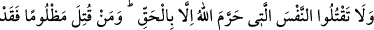
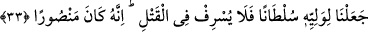

33. Haklı bir sebep olmadıkça Allah’ın muhterem kıldığı cana kıymayın. Bir kimse
zulmen öldürülürse, onun velîsine (hakkını alması için) yetki verdik. Ancak bu velî
de kısasta ileri gitmesin. Zâten (kendisine bu yetki verilmekle) o, alacağını almıştır.
“Haklı bir sebep olmadıkça” haklı olan sebep dışında herhangi bir sebeple “Allah’ın
muhterem kıldığı cana kıymayın.” Allah’ın öldürülmesini haram kıldığı, müslüman
olan veya anlaşma ile canları koruma altına alınmış zimmî ve muâhidlerin canlarına
kıymayın. Bir kişinin öldürülmesini gerekli kılan üç sebep vardır. Bunlar: “Îman
ettikten sonra küfre dönmek, evlendikten sonra zinâ yapmak ve kasıtlı olarak suçsuz bir
kimseyi öldürmektir.
“Bir kimse zulmen öldürülürse” yâni bu üç suçtan birini işlemediği halde öldürülürse
“onun velîsine (hakkını alması için) yetki verdik.” Burada veli, öldürülen kimseden
sonra onun işlerini üstlenecek olan mirasçıları veya mirasçısı olmadığı takdirde devlet
başkanıdır. Çünkü devlet başkanı velisi olmayanın velisi, sorumlusudur. Buradaki
‘yetki’den maksad ise veli isterse katil (kısasen) öldürülür, dilerse ondan diyet alır.
“Ancak bu velî de kısasta ileri gitmesin.” Veli öldürme işinde kulağını, burnunu
keserek, (müsle) veya katil dışında bir başkasını, katilin akrabalarından birini
öldürerek meşrû sınırı aşıp aşırılıkta bulunmasın. Câhiliyye döneminde katili öldürmek
yeterli görülmezdi. Öldürmek denk ve eşit olmadığında dengeyi sağlamak için katilin
yerine katilin akrabalarından birini öldürürlerdi. Kâşifî der ki: “Câhiliyye döneminde
bir kimse öldürülünce maktulün vârisi o kimseyi öldüreni öldürmez, belki katilin
kabilesinin büyüğüne kasdederdi.” Ya da bir kişi yerine iki kişi öldürürdü. Câhiliyye
devrinde eşraftan bir kimse öldürüldüğünde katilin öldürülmesiyle yetinmezler, katilin
akrabalarından bir grubu daha öldürürlerdi. Bir başka aşırılık da hem diyet alıp hem de
katili öldürmektir.
“Zâten (kendisine bu yetki verilmekle) o,” veli “alacağını almıştır.” Şeriat ve devlet
başkanı ona yardım eder. Allah veliye kısas ve diyet hakkını vermek, devlet
başkanlarına da hakkını eksiksiz olarak elde etmesi için veliye yardımcı olmalarını
emrederek yardımda bulunur. Âyette “o” zamirini öldürülen kişiye râci kılmak da
mümkündür. O takdirde mânâ: “Allah öldürülen kimsenin katilini öldürmek ve
öldürülene de ecir vermek sûretiyle yardım eder” demektir.
“Kasıtlı olarak adam öldüren kimsenin tevbesi nedir?” diye soracak olursan, şöyle
cevap veririm: Rasûlullah (s.a.): “Kasıtlı olarak adam öldüren katilin tevbesi üç
şeydedir: Ya öldürülmesi veya affedilmesi ya da ondan diyet alınmasıdır. Bunlardan
hangisi yapılırsa o, katilin tevbesidir.”[82] buyurmuşlardır. Bu hadisi Enes (r.a.)